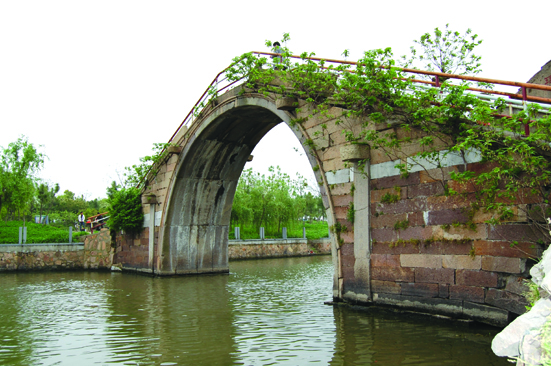

嘉兴市文物保护网 · 市级文物保护单位 · 2014-06-16 · 原文

里仁桥位于嘉兴市秀洲区嘉北街道九里行政村九里汇自然村，南与新城街道殷秀村交界。据清光绪《嘉兴府志》卷五《桥梁》载：“里仁桥在（秀水）县北九里，名九里汇。道光八年（1828），里人钱茂华、仲井田摹资重建（于志）。”民国十二年（1923）《新塍镇志》亦持此说，未提及重修、重建事。系单孔石拱桥，南北横跨新塍塘，全长25米，宽2.62米，拱跨12米，拱矢高5.65米，拱圈用条石纵联并列分节砌成。另有长条石构成桥栏，方形望柱，桥南侧栏板已无存，北侧倾圮不全残存方形望柱5根。南北两侧各铺设台阶29级。桥顶西侧尚存栏板，桥额阳刻楷书 “里仁桥”。顶盘石中央有水涡图案。桥东、西两侧各有阳刻楷书楹联，东为：当年肇造嘉名里仁为□，其余模糊不可辨。里仁桥历史悠久，规模较大，造型美观，做工考究，是当地重要的历史建筑，具有较高的历史和艺术价值。2009年公布为嘉兴市级文物保护单位。